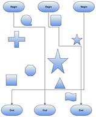

When a link is drawn between two nodes, by enabling the LineRoutingEnabled property of that link and the diagram view, and if any other node is found in between them, the line will be automatically re-routed around those nodes.

Figure 72: Line Routing
Properties
|
Property |
Description |
Type |
Datatype |
Reference links |
|
LineRoutingEnabled
|
Specifies whether the links must be re-routed when nodes are found in the path. Default value is True.
|
Dependency |
Boolean |
NA |
Disable Line Routing for LineConnector
Line Routing for a line connector can be disabled using the LineRoutingEnabled property.
By default this property will be set to True.
|
[C#] LineConnector lc = new LineConnector(); lc.ConnectorType = ConnectorType.Orthogonal; lc.LineBridgingEnabled = false; |
|
[VB] Dim lc As New LineConnector() lc.ConnectorType = ConnectorType.Orthogonal lc.LineBridgingEnabled = False |
The Line Routing is disabled.
Enable LineRouting from DiagramView
When LineRouting for DiagramView is enabled, LineRouting for all the lines will be enabled. You can change this binding by specifying a value for an individual LineConnector.
|
[C#] DiagramView view = new DiagramView (); view.LineRoutingEnabled = true |
|
[VB] Dim view As New DiagramView () view.LineRoutingEnabled = True |
The Line Routing is enabled completely.
Note: Only Orthogonal Connector type supports Line Routing.
Node settings
By default, TreatAsObstacle property of the Node is set to true to avoid the lines overlapping them. If not set for a Node, then it will not be considered as an obstacle and the line might overlap on them.
|
Property |
Description |
Type |
Datatype |
Reference links |
|
TreatAsObstacle |
Gets or sets a value indicating whether the node treats as Obstacle. Default value is True. |
Dependency |
Boolean |
NA |